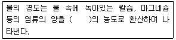
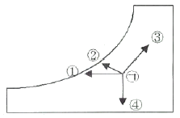
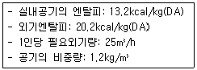
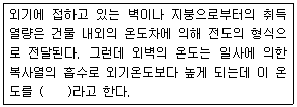
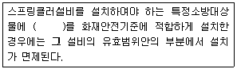

건축설비산업기사 (2007-05-13 기출문제)
1과목: 건축일반
1. 사무소 건축에서 코어(Core)에 대한 설명으로 옳지 않은 것은?
- 사람 및 사물의 수직교통 시설이다.
- 기계ㆍ전기 설비와는 별도로 구성한다.
- 주내력적 구조체의 역할을 담당하는 경우가 많다.
- 코어 설치시 사무소의 유효면적이 증대된다.
(정답률: 알수없음)

2. 아파트의 단면형식 중 복층형에 대한 설명으로 옳지 않은 것은?
- 주택내의 공간의 변화가 있다.
- 복도가 없는 층은 피난상 불리하다.
- 소규모 주택에 유리하여 주로 적용된다.
- 엘리베이터의 정지층수가 적어지므로 운행 면에서 경제적이다.
(정답률: 알수없음)
3. 창호철물의 용도에 대한 설명 중 옳지 않은 것은?
- 도어 스톱은 열려진 여닫이문을 저절로 닫혀지게 하는 장치이다.
- 크레센트는 오르내리창을 잠그는데 사용된다.
- 래퍼터리 힌지는 공중화장실 칸막이문에 사용된다.
- 플로어 힌지는 무거운 자재 여닫이 문에 사용된다.
(정답률: 알수없음)
4. 다음 중 벽돌벽면에 발생하는 균열의 원인과 가장 관계가 먼 것은?
- 기초의 부동침하
- 내력벽의 불균형 배치
- 벽돌 및 모르타르의 강도 부족
- 과다한 벽량
(정답률: 알수없음)
5. 다음의 건축구조 방식 중에서 횡력에 가장 약한 것은?
- 보강블록조
- 벽돌구조
- 철근콘크리트구조
- 철골구조
(정답률: 알수없음)
6. 기초판의 형식에 의한 기초의 분류에 속하지 않는 것은?
- 독립기초
- 복합기초
- 잠함기초
- 온통기초
(정답률: 알수없음)
7. 다음 중 강구조에 대한 설명으로 옳지 않은 것은?
- 부재가 세장하므로 좌굴의 위험성이 높다.
- 소성변형 능력이 크다.
- 재료가 불에 타지 않기 때문에 내화력이 크다.
- 재료가 고강도이기 때문에 고층건물이나 장스팬구조에 적당하다.
(정답률: 알수없음)
8. 철근의 이음에 관한 설명 중 옳지 않은 것은?
- 가능한 긴 철근을 사용하여 이음을 하지 않는 것이 좋다.
- 최대 휨모멘트가 생기는 곳에 이음부를 설치하는 것이 가장 이상적이다.
- 이음부의 위치를 집중시키지 말고 적당히 분산시키는 것이 좋다.
- D35를 초과하는 철근은 겹침이음을 하지 않는다.
(정답률: 알수없음)
9. 지반의 장기 허용지내력도의 값으로 옳지 않은 것은?
- 자갈: 300kN/m2
- 점토: 100kN/m2
- 자갈 +모래: 200kN/m2
- 모래: 150kN/m2
(정답률: 알수없음)
10. 다음 중 건축 연멱적 3,000m2인 임대사무소에 수용할 수 있는 적정인원으로 가장 알맞은 것은?
- 100명
- 300명
- 600명
- 1000명
(정답률: 알수없음)
11. 아파트의 평면 형식 중 홀형에 대한 설명으로 옳지 않은 것은?
- 프라이버시가 양호하다.
- 좁은 대지에서 집약형 주거 등이 가능하다.
- 통행부 면적이 작다.
- 중복도형과 같이 채광과 통풍 조건을 양호하게 할 수 없다.
(정답률: 알수없음)
12. 지붕재료에 요구되는 사항과 가장 거리가 먼 것은?
- 수밀, 내수적일 것
- 가볍고 내구성이 크고 내풍적일 것
- 시공이 용이하고 수리에 편리할 것
- 방화적이고 열전도율이 클 것
(정답률: 알수없음)
13. 병원건축의 각과 계획에 관한 설명으로 잘못된 것은?
- 치과의 진료실은 북쪽이 좋다.
- 내과는 소아과와 인접 배치하고 1실에서 여러 환자를 볼 수 있도록 대진료실로 한다.
- 정형외과는 최하층에 두는 것이 좋다.
- 이비인후과의 진료실은 남쪽 광선은 차단하고 북측 채광을 하는 것이 좋다.
(정답률: 알수없음)
14. 다음 중 기초의 부동침하 원인과 가장 관계가 먼 것은?
- 기초의 배근량 부족
- 지하수위 변경
- 이질지층
- 경사지반
(정답률: 알수없음)
15. 도서관의 출납시스템에 대한 설명 중 옳지 않은 것은?
- 자유개가식은 책의 내용 파악 및 선택이 자유롭고 용이하다.
- 안전개가식은 도서열람의 체크시설은 필요하지 않으나 서가열람은 불가능하다.
- 반개가식에서 열람자는 직접 서가에 면하여 책의 체제나 표지 정도는 볼 수 있다.
- 폐가식은 도서의 유지관리가 양호하나 대출절차가 복잡하다.
(정답률: 알수없음)
16. 학교건축에 관한 설명 중 옳지 않은 것은?
- 초등학교 저학년은 저층부에 배치하고, 운영방식은 종합교실형으로 하는 것이 좋다.
- 학교의 운영은 융통성과 확장성이 요구되고 이에 대한 건축적 배려가 필요하다.
- 시청각관계 제실은 일반교실, 특별교실 등에 가까운 것이 좋으며, 관리부문과도 인접하여 배치한다.
- 체육관은 배구코트를 둘 수 있는 크기가 필요하며, 강당과 겸하여 사용할 경우 강당의 목적에 치중하는 것이 좋다.
(정답률: 알수없음)
17. 폭이 촘보다 넓은 보(wide girder)로 설계하는 이유로 가장 적합한 것은?
- 강성이 증가되어 구조 효율이 향상되므로
- 콘크리트량이 줄어들기 때문에
- 층고를 줄이거나, 천장 공간을 효율적으로 활용하기 위하여
- 설계 디자인이 자유롭기 때문에
(정답률: 알수없음)
18. 다음의 각종 목조 마루에 대한 설명 중 옳지 않은 것은?
- 홀마루: 보를 쓰지 않고 층도리와 간막이도리에 직접 장선을 걸쳐 대고 그 위에 마루널을 깐 것이다.
- 장선마루: 간단한 창고, 공장, 기타 임시적 건물 등의 마루를 낮게 놓을 때 사용되는 1층 마루이다.
- 짠마루: 큰 보 위에 작은 보를 걸고 그 위에 장선을 대고 마루널을 깐 것이다.
- 보마루: 보를 걸어 장선을 받게 하고 그 위에 마루널을 깐 것이다.
(정답률: 알수없음)
19. 다음 중 사무소건축에 있어서 기준층의 층고 결정과 가장 관계가 먼 것은?
- 건물의 높이제한과 층수
- 채광
- 엘리베이터의 대수
- 냉난방설비의 덕트
(정답률: 알수없음)
20. 다음 중 리조트 호텔의 종류에 속하지 않는 것은?
- 터미널 호텔
- 클럽 하우스
- 해변 호텔
- 산장 호텔
(정답률: 알수없음)
2과목: 위생설비
21. 다음의 위생기구 중 1회당 급탕량이 가장 적은 것은?
- 서양식욕조
- 개인세면기
- 샤워
- 주방싱크
(정답률: 알수없음)
22. 다음의 물의 경도에 관한 설명 중 ( )안에 들어갈 말로 알맞은 것은?

- 탄산나트륨
- 탄산마그네슘
- 탄산칼슘
- 불소
(정답률: 알수없음)
23. 다음의 고가수조방식에 대한 설명 중 옳은 것은?
- 대규모의 급수 수요에 대응할 수 없다.
- 급수 공급 압력의 변화가 심하고 취급이 까다롭다.
- 단수시에도 일정량의 급수를 계속할 수 있다.
- 위생성 및 유지ㆍ관리 측면에서 가장 바람직한 방식이다.
(정답률: 알수없음)
24. 다음의 통기배관에 대한 설명 중 옳은 것은?
- 통기수직관은 우수수직관과 겸용하는 것이 좋다.
- 오수 통기관은 일반통기관과 연결해서 신정통기관으로 통기되도록 한다.
- 모든 통기관은 관내의 물방울이 자연유하에 의해서 흐를 수 있도록 해야 하며, 역구배가 되도록 배수관에 접속한다.
- 배수수평관으로부터 통기관을 취출할 때에는 배수관의 수직 중심선 상부로부터 수직 또는 수직으로부터 45°이내의 각도로 한다.
(정답률: 알수없음)
25. 4층 건물의 각층에 2개씩의 옥내 소화전이 설치되어 있는 경우 수원의 수량계산 방법으로 알맞은 것은?
- 4층×2.6m3=10.4m3
- 2개×2.6m3=5.2m3
- 2개×4층=8m3
- 8개×2.6m3=20.8m3
(정답률: 알수없음)
26. 다음 중 압력탱크 급수방식에서 물 공급 순서로 가장 알맞은 것은?
- 상수도-저수조-펌프-압력탱크-위생기구
- 상수도-저수조-압력탱크-펌프-위생기구
- 상수도-압력탱크-펌프-위생기구
- 상수도-압력탱크-저수조-위생기구
(정답률: 알수없음)
27. 다음 중 경보설비에 해당되는 것은?
- 비상조명등
- 비상방송설비
- 무선통신보조설비
- 비상콘센트설비
(정답률: 알수없음)
28. 급수설비의 조닝방식 중 중간수조방식에 대한 설명으로 옳은 것은?
- 수압이 일정하지 않고 변화가 심하다.
- 감압밸브 방식에 비해 에너지 절약을 꾀할 수 있다.
- 정밀한 조닝이 용이하다.
- 중간수조실 및 양수펌프가 필요없다.
(정답률: 알수없음)
29. 배수관의 관경을 결정할 때 기준이 되는 사항은?
- 급수량
- 층고
- 단위시간당 최대 배수량
- 배수관의 위치
(정답률: 알수없음)
30. 액화천연가스(LNG)에 대한 설명 중 옳지 않은 것은?
- 주요성분은 프로판(C3H8), 부탄(C4H10)이다.
- 천연적으로 산출하는 천연가스를 -162℃까지 냉각 액화한 것을 말한다.
- 착화온도가 537℃로 쉽게 연소하지 않는다.
- 비중이 상온에서 공기보다 가벼워 바닥에 누설가스가 체류하지 않는다.
(정답률: 알수없음)
31. 다음의 급수설비에 관한 설명 중 옳지 않은 것은?
- 급수배관이 바닥이나 벽을 관통하는 경우에는 배관 슬리브를 미리 넣어두고 그 속에 관을 통하게 하는 것이 바람직하다.
- 크로스 커넥션이란 급수배관의 일반적인 접합법 중의 하나이다.
- 기구급수부하단위란 그 위생기구의 사용빈도, 동시사용률 등을 고려해서 부하율을 가정한 기구급수단위를 말한다.
- 급수배관의 압력이 높으면 수전의 파손원인이 되며, 또한 수격작용도 발생하기 쉽다.
(정답률: 알수없음)
32. 지붕을 관통하는 통기관은 지붕으로부터 최소 얼마 이상 입상하여 대기 중에 개구하는가?
- 90mm 이상
- 120mm 이상
- 150mm 이상
- 300mm 이상
(정답률: 알수없음)
33. 다음 중 오수정화시설에서 유량조정조를 설치하는 이유와 가장 관계가 먼 것은?
- 건물내 오수량의 시간별 차이가 크기 때문에
- 후속 처리공정의 용량을 줄일 수 있기 때문에
- 유입되는 오수의 찌꺼기를 제거할 수 있기 때문에
- 처리기능을 안정화할 수 있기 때문에
(정답률: 알수없음)
34. 다음의 밸브 중 국부 마찰저항 손실이 가장 큰 것은?
- 볼 밸브
- 체크 밸브
- 글로브 밸브
- 슬루스 밸브
(정답률: 알수없음)
35. 다음의 위생설비 유니트화의 이점에 대한 설명 중 옳지 않은 것은?
- 현장작업공정의 최소화
- 비용 절감
- 현장작업 스페이스의 증가
- 공기의 단축
(정답률: 알수없음)
36. 탕의 비중량이 983kg/m3이고 저탕조에서 팽창탱크의 최고 수위까지의 수직 높이가 10m일 때 팽창탱크의 최고 수위면에서 팽창관의 입상 높이는 최소 얼마인가?
- 1⑤mm
- 127mm
- 151mm
- 173mm
(정답률: 알수없음)
37. 다음 중 터빈 펌프에서 안내날개를 설치하는 이유로 가장 알맞은 것은?
- 진동을 줄이기 위해서이다.
- 속도 에너지를 압력 에너지로 효율 좋게 변환하기 위해서이다.
- 원심력을 더 많이 얻기 위해서이다.
- 유량을 증가시키기 위해서이다.
(정답률: 알수없음)
38. 다음의 동관에 대한 설명 중 옳지 않은 것은?
- 암모니아에 심하게 부식한다.
- 일반적으로 내식성이 좋고 수명이 길다.
- 마찰저항이 적어서 강관을 사용하는 경우보다 관경을 가늘게 하는 것이 가능하다.
- 증류수나 극연수에 부식되지 않는다.
(정답률: 알수없음)
39. 국소식 급탕법 중 많은 온수를 일시에 사용하는 장소에 가장 적합한 방식은?
- 순간식
- 직접가열식
- 간접가열식
- 저탕식
(정답률: 알수없음)
40. 다음 중 격벽트랩은?
- P트랩
- S트랩
- U트랩
- 벨트랩
(정답률: 알수없음)
3과목: 공기조화설비
41. 어떤 수평덕트 내를 흐르는 공기의 전압 및 정압을 측정한 결과 각각 33.8mmAq, 25mmAq였다. 이 때 덕트내 공기의 유속은 얼마인가? (단, 공기의 비중량은 1.2kg/m3이다.)
- 8m/s
- 10m/s
- 12m/s
- 14m/s
(정답률: 알수없음)
42. 공장이나 창고 등과 같이 높고 넓은 공간에 주로 사용되는 강제대류식 방열기로서 휀, 가열코일, 케이싱으로 구성되어 있는 것은?
- 천장패널
- 주철제 방열기
- 유니트 히터
- 콘벡터
(정답률: 알수없음)
43. 온수난방설비의 배관방식 중 온수공급관과 환수관이 각각 별개로 되어 있는 방식은?
- 1관식
- 2관식
- 상향식
- 중력순환식
(정답률: 알수없음)
44. 길이 30m인 배관 내로 온수가 간헐적으로 흐르고 있다. 온수가 통과할 때의 온도는 90℃, 흐르지 않고 있을 떄의 온도는 30℃이며 배관재료의 선팽창계수는 1.3×10-5이라면 온수가 통과될 때 늘어나는 길이는 몇 mm인가?
- 12.5
- 19.8
- 20.4
- 23.4
(정답률: 알수없음)
45. 다음 중 기간 부하를 산정하기 위한 방법이 아닌 것은?
- BIN 방법
- 디그리데이법
- 동적 열부하 계산법
- 최대 열부하 계산법
(정답률: 알수없음)
46. 가습방식의 분류 중 물을 공기 중에 직접 분무하는 수분무식에 속하지 않는 것은?
- 과열증기식
- 원심식
- 초음파식
- 분무식
(정답률: 알수없음)
47. 다음의 난방설비에 대한 설명 중 틀린 것은?
- 온수난방은 증기난방에 비해 설비비가 적게 든다.
- 증기난방의 경우 수격작용에 의한 소음이 생기기 쉽다.
- 증기난방은 온수난방에 비해 한랭지에서 동결의 우려가 적다.
- 온수난방은 증기난방에 비해 예열시간이 길다.
(정답률: 알수없음)
48. 증기 발생기라고도 불리우며 공조용으로 사용되는 예는 거의 없고 간단히 고압의 증기를 얻으려 하는 경우에 사용되는 보일러는?
- 주철제 보일러
- 연관 보일러
- 관류 보일러
- 수관 보일러
(정답률: 알수없음)
49. 변풍량 방식에 사용되는 변풍량 유니트에 대한 설명 중 옳은 것은?
- 바이패스형은 부하의 감소에 따라 교축기구에 의해 풍량을 조절하는 것으로, 덕트의 정압변화에 대응할 수 있는 정압제어가 필요하다.
- 유인형은 난방시에는 실내발생열을 열원으로 이용할 수 있으나 실내의 오염물 제거 성능이 낮다.
- 바이패스형은 송풍동력을 절감시킬 수 있고, 덕트계통의 증설이나 개설에 대한 적응성이 크다.
- 슬롯형은 송풍덕트 내의 정압제어가 필요 없고, 유니트의 소음발생이 적다.
(정답률: 알수없음)
50. 확산형 취출구의 일종으로 몇 개의 콘(cone)이 있어서 1차 공기에 의한 2차 공기의 유인성능이 좋으며, 확산반경이 크고 도달거리가 짧아 천장 취출구로 많이 사용되는 것은?
- 아네모스탯형 취출구
- 브리즈 라민형 취출구
- 노즐형 취출구
- 펑커형 취출구
(정답률: 알수없음)
51. 다음 중 흡수식 냉동기의 주요 구성부분이 아닌 것은?
- 압축기
- 응축기
- 증발기
- 재생기
(정답률: 알수없음)
52. 다음의 습공기 선도에서 ㉠의 상태에 있는 공기의 노점온도를 구하는 방법은 어느 것인가?

- ①
- ②
- ③
- ④
(정답률: 알수없음)
53. 여름철 실내에 위치한 냉장고 안의 습도는 어떤 상태인가?
- 상대습도는 높고 절대습도는 낮다.
- 상대습도는 낮고 절대습도는 높다.
- 상대습도는 높고 절대습도도 높다.
- 상대습도와 절대습도는 동일하다.
(정답률: 알수없음)
54. 환기방식에 있어서 실내압력과 환기량을 일정하게 유지하는 방식은?
- 자연환기 방식
- 급기만 송풍기로 하는 방식
- 배기만 배풍기로 하는 방식
- 급기, 배기 모두 동시에 하는 방식
(정답률: 알수없음)
55. 공조 조닝에 관한 설명 중 옳지 않은 것은?
- 조닝은 실의 방위, 사용시간 등에 따라 계획한다.
- 조닝을 많이 할수록 양호한 실내환경을 얻을 수 있다.
- 조닝을 많이 할수록 설비비는 감소한다.
- 건물의 외부 존은 일사에 의한 영향이 크다.
(정답률: 알수없음)
56. 환기방식 중 열기나 유해물질이 실내에 널리 산재되어 있거나 이동되는 경우에 급기로 실내의 전체 공기를 희석하여 배출하는 방식은?
- 자연환기
- 전체환기
- 집중환기
- 국소환기
(정답률: 알수없음)
57. 1.5m/sec의 유속으로 0.042m3/min의 유량이 흐를 때 배관의 관경을 계산하면 얼마인가?
- 15A
- 20A
- 25A
- 32A
(정답률: 알수없음)
58. 온수난방에서 상당방열면적을 구할 때 기준이 되는 표준 방열량은?
- 350kcal/m2ㆍh
- 450kcal/m2ㆍh
- 539kcal/m2ㆍh
- 650kcal/m2ㆍh
(정답률: 알수없음)
59. 다음과 같은 조건에서 재실인원이 20명인 실내의 냉방에 요구되는 외기부하량은 얼마인가?

- 3400kcal/h
- 3800kcal/h
- 4200kcal/h
- 4600kcal/h
(정답률: 알수없음)
60. 다음 설명 중 ( )안에 들어갈 말로 가장 알맞은 것은?

- 건구온도
- 노점온도
- 상당외기온도
- 습구온도
(정답률: 알수없음)
4과목: 건축설비관계법규
61. 다음 중 다중이용건축물에 해당되는 것은?
- 문화 및 집회시설 중 전시장의 용도로 쓰이는 바닥면적의 합계가 5,000m2인 건축물
- 판매시설의 용도로 쓰이는 바닥면적의 합계가 3,000m2인 건축물
- 의료시설 중 종합병원의 용도로 쓰이는 바닥면적의 합계가 3,000m2인 건축물
- 16층인 건축물
(정답률: 알수없음)
62. 다음의 스프링클러설비의 설치면제에 관한 설명 중 ( )안에 들어갈 시설로 알맞은 것은?

- 연결송수관설비
- 연소방지설비
- 상수도소화용수설비
- 물분무소화설비
(정답률: 알수없음)
63. 다음의 소방시설 중 소화활동설비에 해당되는 것은?
- 옥내소화전설비
- 연결살수설비
- 상수도소화용수설비
- 자동화재탐지설비
(정답률: 알수없음)
64. 건축물을 건축하거나 대수선하는 경우에 건설교통부령이 정하는 구조기준 및 구조계산에 따라 그 구조의 안전을 확인하여야 하는 대상 건축물이 아닌 것은?
- 층수가 3층인 건축물
- 연면적이 800m2인 건축물
- 높이가 15m인 건축물
- 처마높이가 10m인 건축물
(정답률: 알수없음)
65. 건축물의 에너지절약 설계기준에 따른 단열재의 두께는 지역별로 다르다. 지역별 분류 중 중부지역에 속하지 않는 곳은?
- 서울특별시
- 경기도
- 대전광역시
- 충남 천안시
(정답률: 알수없음)
66. 방화구획의 설치기준에 관한 설명 중 틀린 것은?
- 3층 이상의 층은 층마다 구획한다.
- 지하층은 바닥면적 200m2이내마다 구획한다.
- 10층 이하의 층은 바닥면적 1,000m2이내마다 구획한다.
- 11층 이상의 층은 바닥면적 200m2이내마다 구획한다.
(정답률: 알수없음)
67. 건축물의 냉방설비에 대한 설치 및 설계기준에 정의된 심야시간은?
- 22:00부터 익일 08:00까지
- 21:00부터 익일 09:00까지
- 23:00부터 익일 07:00까지
- 24:00부터 익일 09:00까지
(정답률: 알수없음)
68. 바닥면적이 80m2인 학교 교실에 채광을 위하여 설치 하여야 하는 창문 등의 최소 면적은?
- 4m2
- 8m2
- 10m2
- 20m2
(정답률: 알수없음)
69. 건축물에 설치하는 간막이벽을 내화구조로 하여야 하는 대상에 속하지 않는 것은?
- 기숙사의 침실간의 간막이벽
- 백화점의 매장간의 간막이벽
- 의료시설의 병실간의 간막이벽
- 숙박시설의 객실간의 간막이벽
(정답률: 알수없음)
70. 비상용승강기의 승강장 및 승강로의 구조에 대한 설명 중 옳지 않은 것은?
- 승강장은 각 층의 내부와 연결될 수 있도록 하되, 그 출입구에는 갑종방화문을 설치한다.
- 벽 및 반자가 실내에 접하는 부분의 마감재료는 불연재료로 한다.
- 채광이 되는 창문이 있거나 예비전원에 의한 조명설비를 한다.
- 승강장의 바닥면적은 비상용승강기 1대에 대하여 최소 5m2이상으로 한다.
(정답률: 알수없음)
71. 다음 중 공동방화관리자를 선임해야 하는 특정소방대상물 기준에 속하지 않는 것은?
- 고층 건축물(지하층을 포함한 층수가 11층 이상인 건축물에 한한다.)
- 복합건축물로서 연면적이 5,000m2이상인 것
- 복합건축물로서 층수가 5층 이상인 것
- 판매시설 및 영업시설 중 도매시장 및 소매시장
(정답률: 알수없음)
72. 신축 또는 리모델링하는 100세대 이상의 공동주택(기숙사를 제외한다.)은 시간당 최소 몇 회 이상의 환기가 이루어 질 수 있도록 자연환기설비 또는 기계환기설비를 설치하여야 하는가?
- 0.5회
- 0.7회
- 1.2회
- 1.5회
(정답률: 알수없음)
73. 다음 중 건축물의 에너지절약을 위한 권장사항으로 부적합한 것은?
- 급탕용 저탕조의 설계온도를 40℃이상으로 한다.
- 폐열회수형 환기장치를 설치한다.
- 급수용펌프에 가변속 제어방식을 채택한다.
- 이코노마이저시스템을 적용한다.
(정답률: 알수없음)
74. 다음 중 건축허가 등을 함에 있어서 행정기관이 미리 소방 본부장 또는 소방서장의 동의를 받아야 하는 건축물 등의 범위에 속하는 것은?
- 연면적 300m2인 모든 건축물
- 차고ㆍ주차장으로 사용되는 층 중 바닥면적이 200m2인 층이 있는 시설
- 승강기 등 기계장치에 의한 주차시설로서 자동차 10대를 주차할 수 있는 시설
- 바닥면적이 100m2인 지하층이 있는 모든 건축물
(정답률: 알수없음)
75. 다음 중 건축물의 용도분류상 단독주택에 해당되지 않는 것은?
- 다중주택
- 다가구주택
- 기숙사
- 공관
(정답률: 알수없음)
76. 소방시설 설치유지 및 안전관리에 관한 법률에 따른 용어의 정의에 관한 설명 중 옳지 않은 것은?
- 소방시설등이라 함은 소방시설과 비상구, 방화문, 영상 음향차단장치, 누전차단기 및 피난유도선을 말한다.
- 피난층이라 함은 곧바로 지상으로 갈 수 있는 출입구가 있는 층을 말한다.
- 무창층이라 함은 피난층 중 개구부 면적의 합계가 당해층 바닥면적의 1/20 이하가 되는 층을 말한다.
- 비상구라 함은 주된 출입구 외에 화재발생 등 비상시에 건축물 또는 공작물의 내부로부터 지상 기타 안전한 곳으로 피난할 수 있는 가로 75cm, 세로 150cm 이상 크기의 출입구를 말한다.
(정답률: 알수없음)
77. 소화활동설비 중 제연설비를 설치하여야 할 기준으로서 틀린 것은?
- 문화집회 및 운동시설로서 무대부의 바닥면적이 150m2이상인 것
- 지하가 중 터널로서 길이가 1,000m이상인 것
- 판매시설 및 영업시설 중 시외버스정류장, 철도역사, 공항시설, 해운시설의 대합실 또는 휴게시설로서 지하층 또는 무창층의 바닥면적이 1,000m2이상인 것
- 지하가(터널 제외)로서 연면적 1,000m2이상인 것
(정답률: 알수없음)
78. 다음 중 배연설비의 설치 기준에 관한 설명으로 옳지 않은 것은?
- 건축물에 방화구획이 설치된 경우에는 그 구획마다 최소 2개소 이상의 배연창을 설치하여야 한다.
- 배연창의 유효면적은 1m2이상이어야 한다.
- 배연구는 연기감지기 또는 열감지기에 의하여 자동으로 열 수 있는 구조로 하되, 손으로도 열고 닫을 수 있도록 하여야 한다.
- 배연구는 예비전원에 의하여 열 수 있도록 하여야 한다.
(정답률: 알수없음)
79. 다음 중 열손실방지 등의 에너지이용합리화를 위한 건축물 부위의 열관류율의 기준이 옳지 않은 것은? (단, 중부지역, 열관류율의 단위는 kcal/m2ㆍhㆍ℃)
- 거실의 외벽(외기에 직접 면하는 경우): 0.60 이하
- 거실의 외벽(외기에 간접 면하는 경우): 0.55 이하
- 공동주택의 측벽: 0.30 이하
- 창 및 문(외기에 간접 면하는 경우): 4.70 이하
(정답률: 알수없음)
80. 승용승강기를 최소 2대 이상 설치하여야 하는 건축물의 용도는? (단, 6층 이상의 거실면적 합계가 2000℃이며, 8인승 승강기 사용)
- 의료시설 중 병원
- 문화 및 집회시설 중 전시장
- 위락시설
- 숙박시설
(정답률: 알수없음)